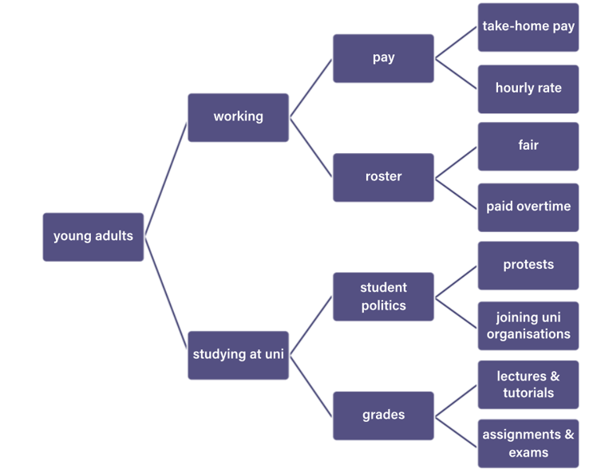
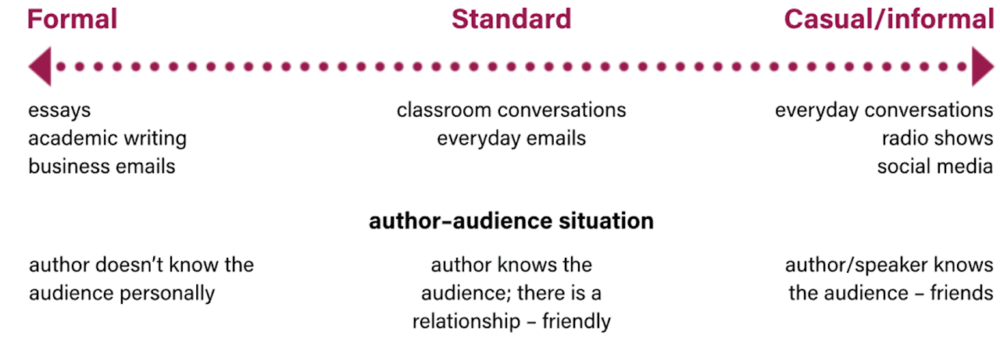

On this page
Creating Texts
Audience
The audience refers to anyone who is viewing, reading or listening to a text.
1. Begin to identify your audience by answering the following questions:
2. What are you writing about?
3. Who would be interested in this topic?
4. Is there more than one audience who might be interested in this?
5. What other texts exist that are like my idea? Who are their audience?

Purpose
Writing to Express
Use your imagination and creativity to explore and convey ideas
Examples include novels, short stories, plays, poems and films.
Usually involves imagined characters, places, situations and events.
Usually contain tension and conflict as characters seek to achieve their coals.
Writing to Explain
Use your imagination and creativity to explore and convey ideas
Examples include novels, short stories, plays, poems and films.
Usually involves imagined characters, places, situations and events.
Usually contain tension and conflict as characters seek to achieve their coals.
Writing to Reflect
Use your imagination and creativity to explore and convey ideas
Examples include novels, short stories, plays, poems and films.
Usually involves imagined characters, places, situations and events.
Usually contain tension and conflict as characters seek to achieve their coals.
Writing to Argue
Use your imagination and creativity to explore and convey ideas
Examples include novels, short stories, plays, poems and films.
Usually involves imagined characters, places, situations and events.
Usually contain tension and conflict as characters seek to achieve their coals.

Personal Journeys
From the Study Design
Explorations of ’life’ or biographical explorations - telling our stories, telling others’ stories, the problem of telling stories, appropriation of stories, who tells the stories and our history, missing stories, marginalised and elevated stories. Students could explore personal milestones, the effects of key events on their lives, or explore these ideas through the eyes of others.
Students who have migrated can explore their stories of movement and disruption. They can explore the expectations of change and the language of a new place and culture.

Writing
Writing about personal journeys explores both the physical world and the internal world of oneself and others.
Reading and crafting texts about journeys provide opportunities to consider new places, perspectives, and self-discovery.
Personal journeys involve various experiences, including challenges, growth, and self-discovery.
Writing about personal journeys allows individuals to share unique experiences with others.
REMINDER: You have access to the exam generator and the prompt generator to practice your Section B skills.
Ideas
A personal journey can involve:
Travel to a physical place.
Psychological or emotional growth and change.
A combination of both, where physical travel leads to new insights.
Interior journeys may take a long time to occur due to significant events.
The most important aspect of a personal journey is change – the individual or group is fundamentally altered by it.